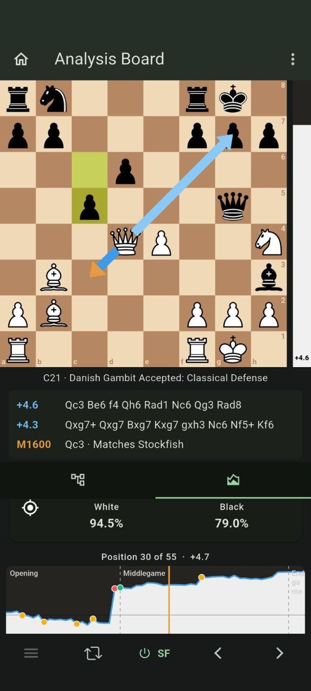

Find your kind of game.
Choose a Maia rating from 600 to 2600. Set your clock, take a move back, try another line, or simply play without a time limit.
BY MAIA FANS, FOR MAIA FANS
Meet a different kind of chess opponent. Play against Maia-3, trained to play like people. Then explore your games with Maia and Stockfish, entirely offline on Android.
Always free. No ads. No account. Just chess.
Runs entirely on your device
Free & open source
Your games stay with you
A DIFFERENT PERSPECTIVE
People don’t play like perfect engines. Maia was trained on human games, giving you a partner that reflects how people at different levels choose their moves.
Choose a Maia rating from 600 to 2600. Set your clock, take a move back, try another line, or simply play without a time limit.
Compare Maia’s likely choices with Stockfish’s best lines. Put two Maia ratings side by side to see how the same position looks at different levels.
Review a whole game on your phone. Follow the evaluation graph, explore variations, and import or export PGNs. No daily analysis quota.

CURIOSITY, ENCOURAGED
Stockfish helps you find the strongest continuation. Maia offers another perspective: what might a human player choose here?
Explore both, branch into a variation, and bring your own games. Everything happens on your device.
YOUR GAME, YOUR WAY
Adjust move variety and timing. Use takebacks, premoves, and flexible time controls to make practice your own.
Experimental Chessnut support lets you play on a physical board. Go and Air have been confirmed; see the guide for compatibility and limits.
Board compatibilityChoose from ten interface languages, including English, Japanese, Chinese, Korean, Spanish, German, French, Russian, Hindi, and Brazilian Portuguese.
Study the source, suggest an improvement, help translate, or build your own fork. Mobile Maia will always remain free and open source.
READY WHEN YOU ARE
Get Mobile Maia for Android.
No subscription. No sign-up.
Always free.
Install through the F-Droid client and receive update notifications.
Open F-DroidF-Droid publishes updates after its separate reproducible-build process.
Find the latest developer-signed release and its release notes on GitHub.
Get it from GitHubDownload the .apk file under Assets. Manual installs need manual updates.
For F-Droid, install the client from f-droid.org, then search for Mobile Maia. For a direct install, open the GitHub release page, expand Assets, and download the APK on your Android device.
When you open the APK, Android may ask you to allow that browser or file manager to install unknown apps. Allow it for the app you used, confirm the installation, and you can turn that permission off again afterward. Keep the same distribution source for updates. See the installation guide for more help.
Yes. The Maia-3 model and Stockfish are bundled with the app. After installation, you can play and analyse without an internet connection. There’s no account, cloud analysis, or daily game limit.
The download is several hundred megabytes because the Maia model comes with it. That’s what lets your phone run Maia locally, without sending your positions to a server or downloading an engine later.
Think of the selected rating as a human-play setting, rather than a promise about competitive strength. Maia models human move choices at different ratings. Sampling settings, time controls, and the position can all affect how it plays. Read the project’s research.
There are no plans for an official Google Play release or iPhone app. Mobile Maia chooses open Android distribution in keeping with its software-freedom values. Independent forks are welcome under the applicable licences, with distinct branding. Read the project’s position.
Mobile Maia is an independent community project, made by Maia fans. It uses Maia-3 from the University of Toronto’s Computational Social Science Lab, alongside Stockfish. It is not affiliated with or endorsed by those projects. Meet the projects behind it.
Try the app, report a reproducible bug, help translate, improve the documentation, or test Preview. Feature requests belong in the Preview issue tracker; Stable bugs belong in the Stable issue tracker. Please search for existing reports first.
A COMMUNITY PROJECT
Free to play. Free to understand. Free to make better.
Come build with us